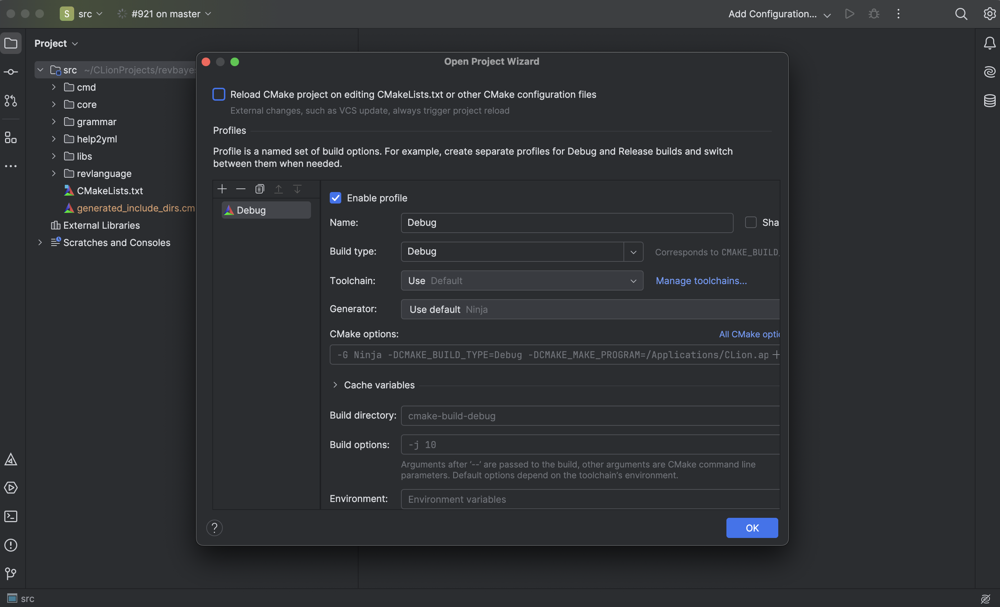
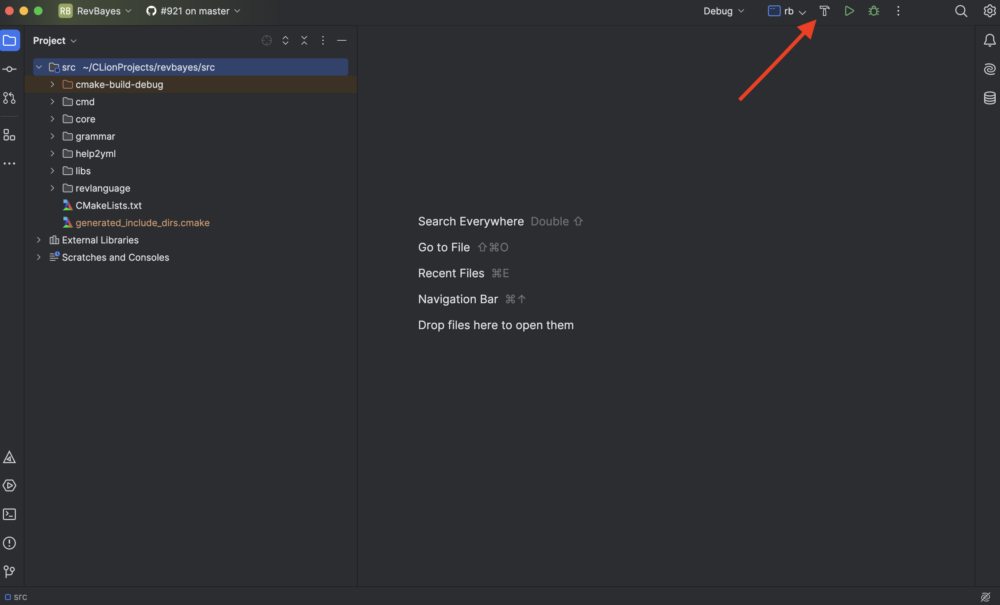

Clion is a paid IDE from JetBrains. Your insititution may provide free access you can access here.
You will first need to install RevBayes from source. Next you should install and build RevBayes (i.e. ./build.sh). For this tutorial I used CMake which I recommend for CLion but steps are likely similar for meson. Next, open Clion and open a project selecting the revbayes/src folder from wherever you have stored it on your computer.
CLion will likely not be able to build yet as it struggles to understand what you are using to build RevBayes that we will fix next. In the meantime close CLion and open your preffered terminal application, changing the directory to where you installed RevBayes.
Once here you will need to build using CMake once again in the revbayes directory this time using the following commands:
cmake -S src -B build-cmake -G Ninja -DCMAKE_BUILD_TYPE=Release
cmake --build build-cmake -j
The first command is doing a few different things but the most important is the -S src portion. This will tell CLion that revbayes/src is the actualy project root for the C++ project. CLion was expection the CMakeLists.txt to be in the revbayes directory even though its in the revbayes/src. The secone command is more of a organizational step that is creating a CMake build in the revbayes directory so it is explicitly seperate from a meson build.
Before we can fully utilize CLion, we need to remove a hidden file that was created when we opened our src project. First change your directory into the src directory and type the command ls -a. You should see the files contained in the directory including a directory called .idea. Many IDEs create ‘hidden’ files that stores configuration information about the project. The next command can be dangerous so please be careful in its use.
In your src directory type the command rm -rf .idea to remove this config information as we will want a ‘clean slate’ when we open the project. Now you are ready to launch CLion again! Launch the program and open the project using the revbayes/src directory. You should see the following pop-up just click ok!

Finally we can build IN CLion! Click the build button shown here. You can also launch in debug mode but if everything has gone smoothly your now ready to start developing!
